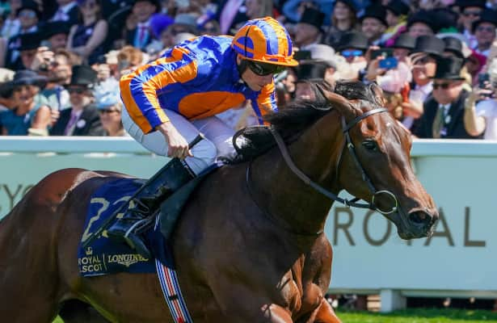

True Love apunta al Coronation Stakes del Royal Ascot tras su 1.000 Guineas
La potra True Love, vencedora de las 1.000 Guineas de Newmarket bajo Wayne Lordan, ha sido nombrada para el Coronation Stakes del Royal Ascot, Grupo 1 de potras de tres años que se disputa sobre la milla británica el viernes 19 de junio, cuarto día del gran meeting inglés. La inscripción ratifica el plan natural de…

Foto: image-uploader.horseracingnation.com
La potra True Love, vencedora de las 1.000 Guineas de Newmarket bajo Wayne Lordan, ha sido nombrada para el Coronation Stakes del Royal Ascot, Grupo 1 de potras de tres años que se disputa sobre la milla británica el viernes 19 de junio, cuarto día del gran meeting inglés. La inscripción ratifica el plan natural de Aidan O'Brien para la pupila de Ballydoyle, que partió a precio de 5/1 en su exhibición primaveral en la Rowley Mile.
El Coronation Stakes es una de las ocho pruebas de Grupo 1 que aglutina la reunión real y suele recibir a las ganadoras de las distintas Guineas europeas en su primera prueba sobre milla después de Newmarket. La distancia es la misma con la que True Love se proclamó campeona de las Guineas y permite a O'Brien mantener a su potra en su mejor terreno, sin obligarla todavía a estirar el recorrido a las once furlongs del Oaks.
Aidan O'Brien sigue siendo, con cinco victorias, uno de los grandes nombres del Coronation Stakes en el siglo XXI. Para Lordan, que ha consolidado su asociación con la potra durante la primavera, el meeting de Ascot supone una de las grandes citas del calendario y la oportunidad de añadir otro Grupo 1 a la lista corta de jockeys con triunfos en Royal Ascot durante 2026.
La Royal Ascot 2026 se celebra del 16 al 20 de junio y mantiene la estructura de cinco días con ocho pruebas de Grupo 1. El Coronation Stakes, dotado con 750.000 libras y a las 16:20 hora local del viernes, será una de las grandes citas para las dosañeras de la generación, en una edición que también reunirá previamente a sus rivales naturales en las Irish 1.000 Guineas y en el Poule d'Essai des Pouliches francés.
— Redacción de Galope al Día